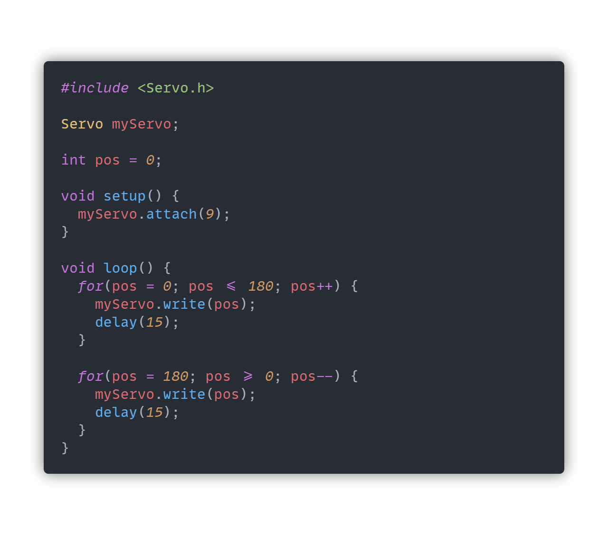
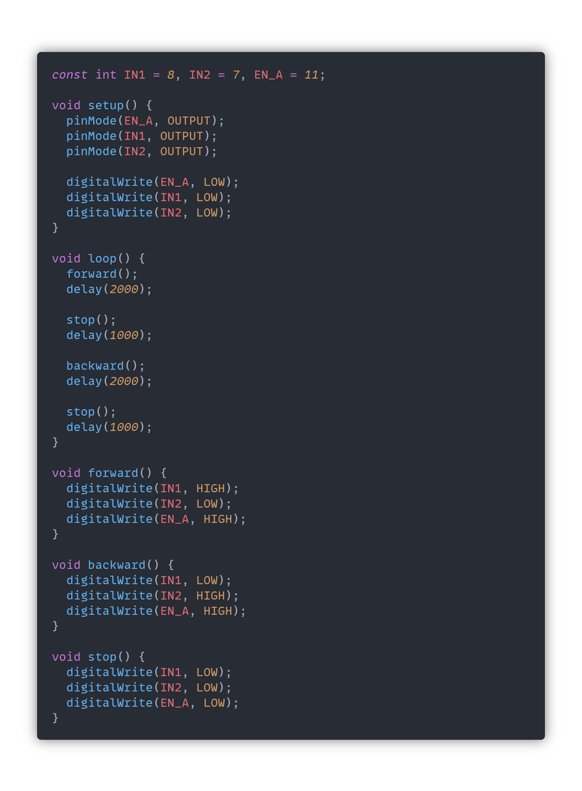

Lab 6: Just a Motor of Time
Henry Waill - 3/15/2023
Description
In this lab, we look into controlling two different types of motors, the servo motor and the DC motor. These two motors operate in vastly different ways. Servo motors rely on more of a digital output, while DC motors rely on more of an analog output.
Materials
All of the materials required to complete this lab, with the exception of the multimeter, were supplied in the ELEGOO Arduino Uno Starter Kit.
- Arduino (Elegoo) Uno R3 Controller Board
- USB Cable
- Breadboard Jumper Wires
- Power Supply Module
- Multimeter
- Servo Motor SG90
- DC Motor and Fan Blade
- L293D Integrated Circuit
- Potentiometer
- 9V Battery with Snap-on Connector
Part 0: Setting Up Power
To start this lab, we revisit an old friend of ours, the Power Supply Module. The current requirements of our motors are both too high for our arduino to supply and are too inconsistent to be handled by the relatively sensitive electronics on the microcontroller. Here's a picture of the Power Supply Module installed in our breadboard:

Part 1: Wiring the Servo
The first motor that we will be working with is the Servo Motor. The servo motor can rotate to specific angles. In our case, we can rotate to any angle from 0 degrees to 180 degrees. There are three wires needed to connect our servo to our circuit. One each for 5V and ground, and another signal wire to control the behavior of the servo. The signal wire must be connected to one of the PWM-capable pins on our Arduino, denoted with a "~." The other wires require some special attention as well. While we would love to run the motor off of the 5V pin on our microcontroller, the current demands of our motors can exceed the current ratings of the Arduino's power system. In addition, motors are prone to inconsistencies in the current draw depending on environmental factors. Because of this, we need to run the motor with our Power Supply Module. It's also important to bridge all of the grounds together. The complete circuit is shown below:

Controlling the servo from the arduino requires some relatively advanced PWM calculations and timing logic. Luckily for us, we don't have to think about any of that and can use a built-in library, instead. We'll use Arduino's Servo library. Here's what it looks like, successfully installed in VS Code:

We can pretty quickly get a servo up and running with this library. Here is some example code and a video of the servo performing a basic sweeping motion:
Part 2: Controlling the Servo
To start the next part of the lab, we will add a familiar component to the circuit, the potentiometer. Here's what the new circuit looks like:

We then want to use the map() function to change the range of values we are receiving from the analog pin to a range that we can send to the servo. Here's a sketch that allows the potentiometer to control the position of the servo motor:

And here's a video of the sketch in action:
We can also change the behavior of the circuit so that the potentiometer controls the speed at which our original sweeping sketch sweeps. Here's the new sketch and a video of the new interaction. At this point in the lab, I was struggling with inconsistent breadboard connections, so the motion of the servo will appear choppy. I later changed to a different breadboard that allowed for more consistent performance.

Part 3: DC Motor and Motor Driver
DC Motors are easier to get up and running in their most basic state, but are more complicated to truly control. There are two wires connected to the motor, and any voltage difference across the terminals will result in the motor's rotation. Here's an image of the motor connected to our breadboard, and a video of the fan spinning.

Reversing the polarity of the motor will result in reversing the direction of rotation. The speed of rotation can be controlled using PWM. These are simple concepts, but implementing the combination of these methods on a breadboard is very complicated and involves circuit logic that we have yet to explore. Instead, we will use our first Integrated Circuit (IC.) We will use the L293D IC, which is an example of a motor driver. This little chip is a very compact circuit that can plug directly into our breadboard and is specifically designed the perform the exact tasks we need. Here's a picture of the IC added to our circuit:

This new addition to the circuit allows for us to control the motor's direction and speed using just three output pins. Here's an example sketch that moves the motor in both directions and stops the motor in between:
And here's a video of the sketch in action:
This setup allows us to create more interesting behaviors, like easing the transitions between different speeds. Here's a sketch that implements some of these:

And here's a video of the sketch:
Part 4: Table-Top Fan
To finish up the lab, we will create a circuit that combines the two motor circuits into one. This is as simple as adding them together, and doesn't require any more advanced techniques. Here's how I attached the two motors together to emulate the motion of an oscillating fan:

And here's an image of the circuit:

We are tasked with making the servo oscillate between 0 degrees and 120 degress. The fan will spin at 70% power, which is equivalent to a PWM value of 179. The code is actually quite simple:

And here's a video of the fan in action: